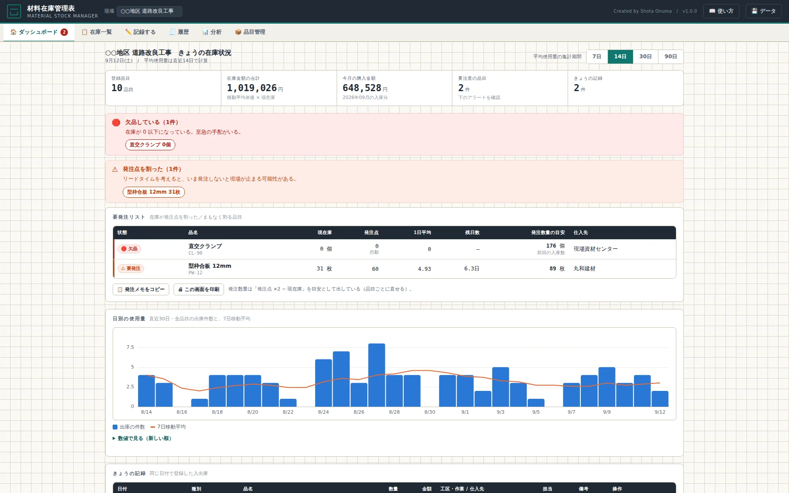
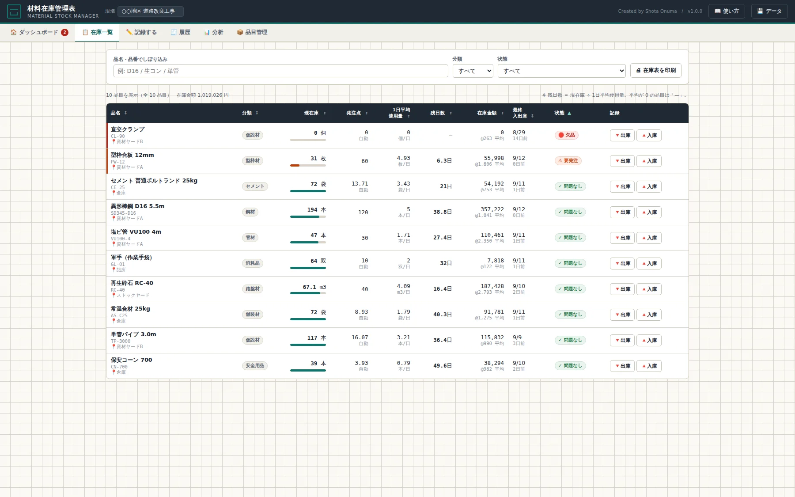
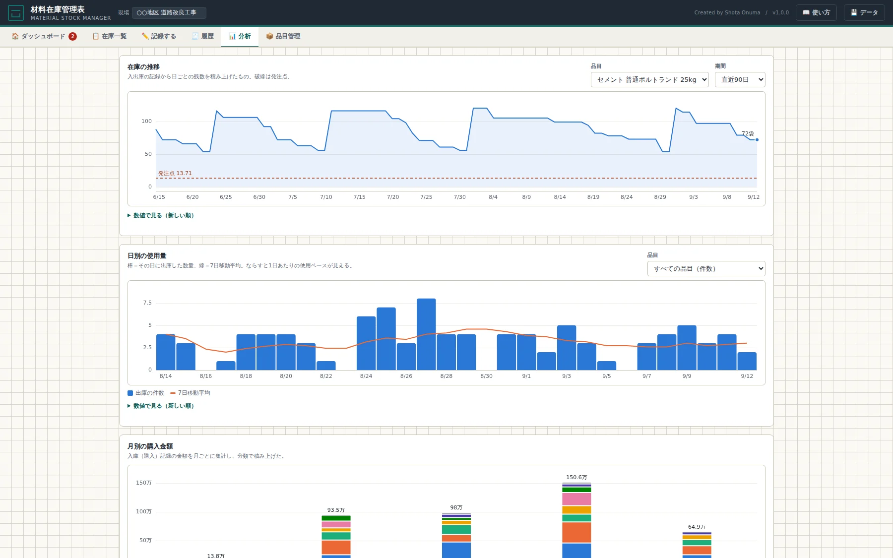

T-0XX公開中v1.0
材料在庫管理表MATERIAL STOCK MANAGER
現場で使った材料を、その場で1件ずつ記録するだけ。残数・1日あたりの使用ペース・あと何日もつかが自動で出ます。自分で決めた発注点を割ったら、ダッシュボードのアラートと要発注リストで知らせます。インストール不要、通信なし、データは端末の中だけです。
📄 単一HTML📵 オフライン可📱 スマホでも入力可🔒 データは端末内

PAIN / こんな作業、毎回やっていませんか
材料の残りは、たいてい「誰かの記憶」の中にある
🧐
あるはずのものが無い
朝いちで取りに行ったら空だった。ヤードに行くまで残数が分からないので、段取りが止まってから気づく。
📄
発注の時期が勘になる
「そろそろ頼むか」の根拠が無い。早すぎれば置き場を圧迫し、遅ければリードタイムが間に合わない。
🧾
いくら買ったか後で分からない
納品書は溜まるが、月にどの材料へいくら出たかは集計しないと見えない。原価の当たりが遅れる。
FEATURES / できること
記録するのは「使った数」だけ
あとの計算はツールがやります。
📉
1日平均使用量と残り日数
直近7/14/30/90日の出庫から、1日あたりの使用ペースを算出。現在庫と突き合わせて「このペースであと何日」を出します。
🔔
発注点アラートと発注メモ
発注点＝平均使用量×(リードタイム＋安全日数)を自動で算出（手入力も可）。割った品目は要発注リストに集まり、発注メモを1クリックでコピーできます。
📊
在庫と金額をグラフで
在庫の推移、日別使用量と7日移動平均、月別の購入金額（分類で積み上げ）、品目別の購入金額 上位10。どのグラフにも数値表が付きます。
HOW TO / 使い方
基本のステップ
品目を登録する
「品目管理」で品名・単位・初期在庫を入れます。リードタイム（発注してから現場に入るまでの日数）と安全日数を入れておくと、発注点が自動で計算されます。
使った分・仕入れた分を記録する
「記録する」で品目ボタンを押し、数量を入れるだけ。仕入れのときは単価を入れると金額が自動で出ます。記録後の在庫がその場で確認できます。
朝いちでダッシュボードを見る
欠品・要発注・まもなくの品目がまとまっています。在庫一覧はA4横で印刷できるので、詰所に貼る在庫表としても使えます。


SPEC / 動作環境
使う前に知っておくこと
| 対応ブラウザ | Chrome / Edge / Safari（PC・スマホとも）。インストール不要 |
|---|---|
| 通信 | 不要。外部ライブラリも読み込まないので、回線の無い現場でも動く |
| 保存先 | 使っている端末のブラウザ内（localStorage）。サーバーには送らない。端末を替えるときはJSONバックアップで移す |
このツールがしないこと。 「買い時」「持ちすぎ」といった評価はしません。アラートは自分で決めた発注点に届いたという到達の事実を伝えるだけで、発注するかどうかは現場の段取りを見て人が決めます。
更新履歴 最新 —
FAQ / よくある質問
質問と答え
いまの在庫を、途中から入れ始めてもいいですか。
できます。品目の「初期在庫」と「初期在庫の日付」に、数えた日の実数を入れてください。それより前の記録は計算に入りません。
帳簿と現物が合わなくなったら。
「数え直し（棚卸）」で数えた実数を入れます。過去の記録は書き換えず、差分だけが調整記録として1件残ります。いつ合わせたかが追えます。
発注点は自分で決められますか。
品目管理で数字を入れればその値が優先されます。空欄のままなら、1日平均使用量×(リードタイム＋安全日数)で自動計算します。
複数人で同じデータを見られますか。
いまは端末ごとに独立しています。共有したいときはJSONバックアップを書き出して渡してください（同時編集はできません）。
ExcelやCSVとやり取りできますか。
品目マスタ・入出庫の記録・在庫一覧をCSVで書き出せます。品目マスタと入出庫はCSVからの読み込みにも対応しています。
データが消えることはありますか。
ブラウザのデータを消したり、端末を初期化すると消えます。「データ」からJSONバックアップを定期的に書き出してください。最後に書き出した日が画面に出ます。